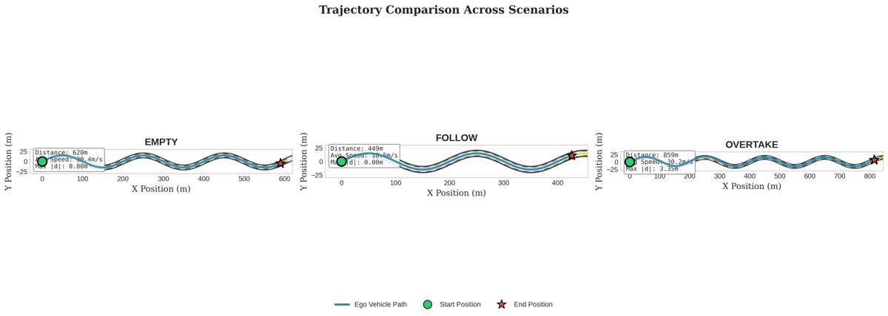
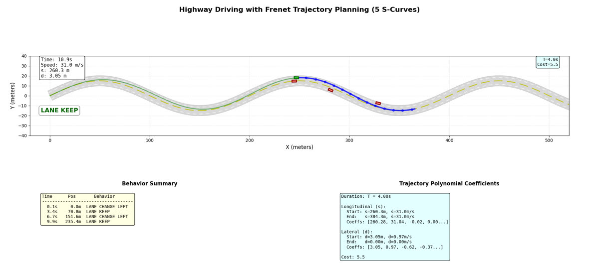

Sensor fusion · LiDAR · Planning
CARLA Autonomous Navigation
An autonomous-driving stack in CARLA that fuses LiDAR and camera data to detect obstacles, then decides and plans maneuvers like following and overtaking.
● LIVE SIM
- LiDAR + cameraSensors
- CARLA 0.9.16Simulator
- 5Team
Problem
A self-driving car has to see dynamic obstacles reliably, decide what to do, and produce a smooth, feasible path, all in real time.
Approach
- Built data pipelines that fuse LiDAR and camera data to detect dynamic obstacles and model environmental uncertainty.
- Used Markov Decision Process methods and a behavior tree for high-level maneuver decisions; I implemented the behavior-tree helper, condition and action nodes.
- Planned trajectories in the Frenet frame: quintic lateral and quartic longitudinal polynomials, jerk-based costs and feasibility checks.
- Validated scenarios for an empty road, car following and overtaking.
Results
- Working follow and overtake behavior across the tested scenarios, with trajectory plots for each.
In action

